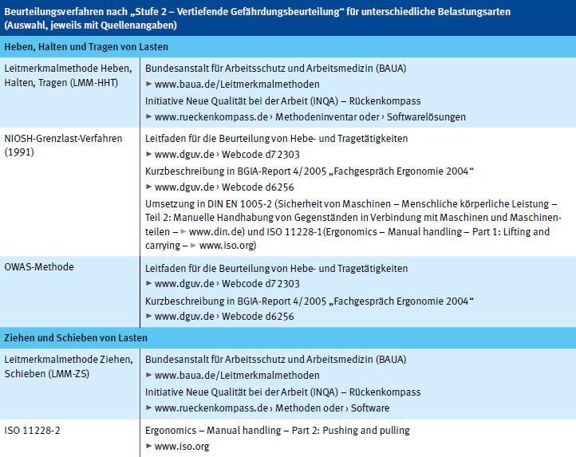
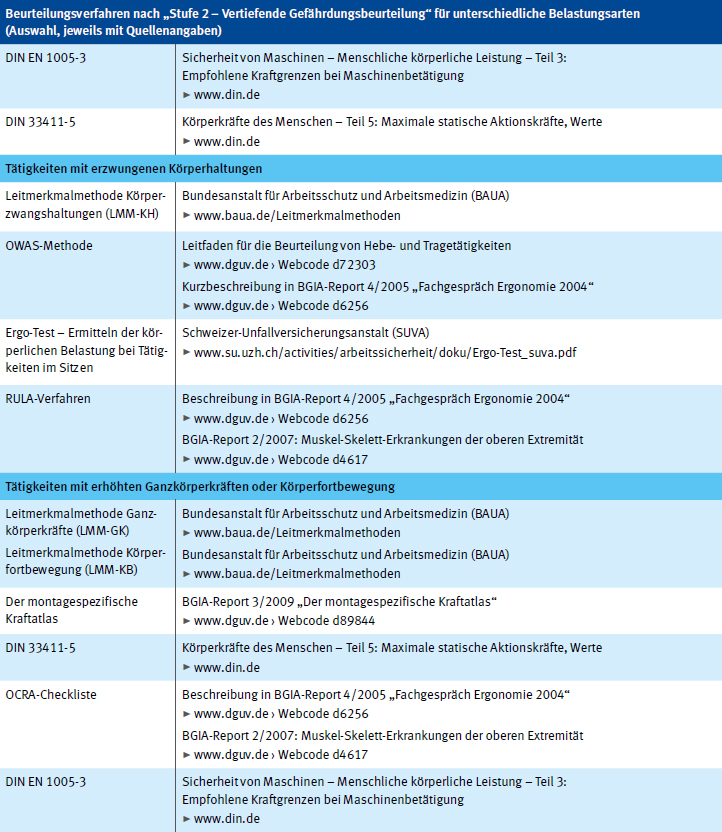
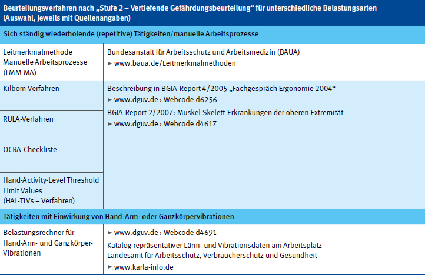

Anhang 2
Tabelle der Verfahren zur vertiefenden Gefährdungsbeurteilung (Stufe 2)
In der nachfolgenden Tabelle sind Normen und Verfahren zur Gefährdungsbeurteilung von körperlichen Belastungen für eine vertiefende Gefährdungsbeurteilung ("Stufe 2") aufgelistet. Die Verfahren richten sich an betriebliche Praktikerinnen und Praktiker, Betriebsärztinnen und Betriebsärzte und Fachkräfte für Arbeitssicherheit und sind jeweils getrennt für die einzelnen Belastungsarten (manuelle Handhabung, Zwangshaltung etc.) dargestellt.
Weitere Hilfestellungen zur Gefährdungsbeurteilung von Belastungen des Rückens und der
Gelenke erhalten sie unter:
- Leitfaden zur Beurteilung von Hebe- und Tragetätigkeiten www.dguv.de – Webcode d72303
- BGIA-Report 2/2007: Muskel-Skelett-Erkrankungen der oberen Extremität www.dguv.de – Webcode d4617
- BGIA-Report 4/2005: Fachgespräch Ergonomie 2004 www.dguv.de – Webcode d6256
- IFA-Report 6/2011: 4. Fachgespräch Ergonomie 2010 www.dguv.de – Webcode d120265
- DGUV Report 2/2014: 5. Fachgespräch Ergonomie 2013 www.dguv.de – Webcode p012324
- DGUV Report 2/2017: 6. Fachgespräch Ergonomie 2016 www.dguv.de – Webcode p012658
- DGUV Report 2/2020: 7. Fachgespräch Ergonomie 2019 www.dguv.de – Webcode p021611


